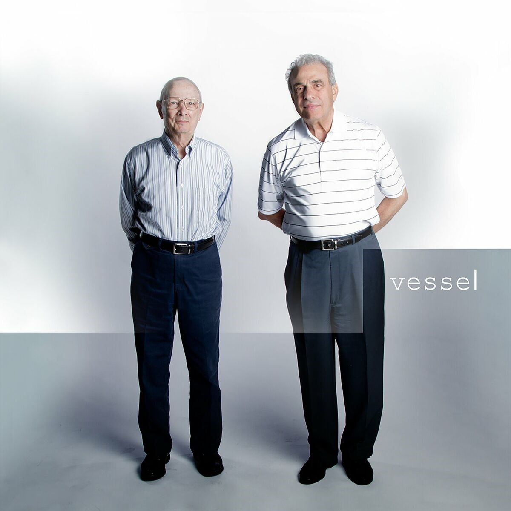

Vessel es el tercer álbum del grupo estadounidense Twenty One Pilots, lanzado el 8 de enero del 2013. Es el primer álbum de estudio de la banda grabado con Fueled By Ramen, después de lanzar dos álbumes independientes, Twenty One Pilots (2009), y Regional At Best (2011). Al igual que este último, Vessel tiene influencias del indie pop, el electropop y el rap, y cuenta con un contenido lírico de enfermedad mental, depresión, y suicidio; pero también religión. Sin embargo, no cambió mucho respecto a su predecesor, Regional At Best, ya que fue una remasterización con mejor calidad con algunas nuevas canciones y dejando las anteriores como bonus track.
En el verano de 2012, Twenty One Pilots lanzó Three Songs EP, el cual contenía las canciones "Guns For Hands", "Migraine", y "Ode To Sleep". El 11 de septiembre, "Holding On To You" fue lanzado como un sencillo. El 18 de diciembre, el álbum se puso a disposición de streaming a través de la revista Entertainment Weekly. Vessel fue por fin lanzado mediante Fueled By Ramen el 8 de enero de 2013. Los dos hombres en la cubierta del álbum son los abuelos de Joseph y Dun. El dúo quiso ver la reacción del público en cuanto al nombre del álbum, y cuando el público dijo que sí, el dúo dijo: "Bueno, ¡esto puede funcionar!" En una entrevista, Joseph habló sobre el significado del nombre del álbum diciendo que "un buque (nuestro cuerpo), es un objeto que lleva algo mucho más importante que la capa exterior y, al morir, es puesto en libertad y sigue vivo."
Imagen del album:
Canciones de este album: